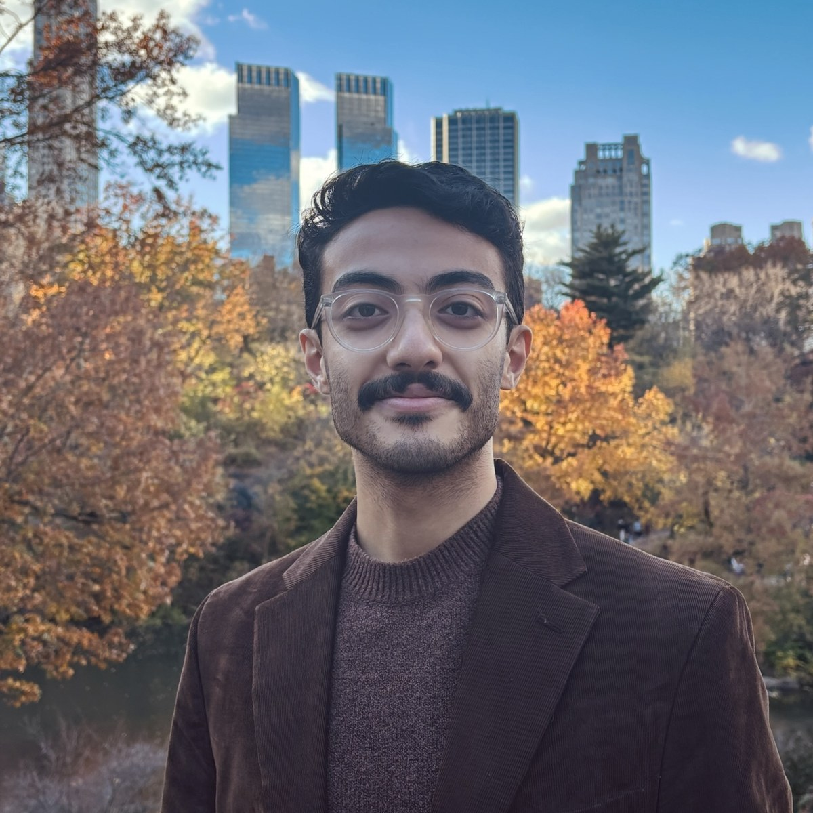
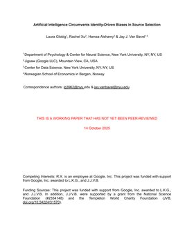
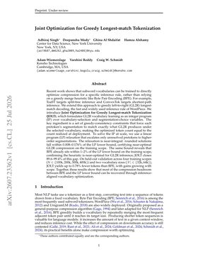

Human–AI Interaction · Computational Social Science · Sociotechnical AI
I'm a researcher working on Human–AI Interaction and Computational Social Science. I study how interactions with AI change individuals, and how these changes aggregate into collective patterns.
At NYU's Center for Conflict and Cooperation (PI: Jay Van Bavel), I study Human–AI Interaction and social media dynamics, drawing on social psychology and behavioral experimentation. Previously, I was a visiting student researcher at the University of Cambridge's Centre for Human-Inspired AI, in the Trustworthy AI Lab (PI: Umang Bhatt), researching how AI assistance affects skill development among knowledge workers.
I'm also the Founding Researcher at Subconscious AI, where I lead evaluations of simulated people, testing whether they behave like real ones.

Founding Researcher, Evaluations @ Subconscious AI
Research Assistant @ Van Bavel Lab at NYU
MS Data Science · BA Economics, NYU
Interactions with AI can shape people's beliefs, behaviors, and capabilities. I study:
I’m interested in studying these effects across different contexts, such as cognition, social behavior, and well-being. My work combines behavioral experiments, social media data, and computational methods, including NLP and machine learning.
Across three experiments, people preferred AI over partisan human sources when seeking political information, even when they judged the sources equally competent. When politics was irrelevant, AI was preferred only over outgroup sources, suggesting its advantage depends on being seen as outside partisan identity.

A framework for finding tasks where AI offers short-term productivity at the expense of long-term skill development.
A behavioral intervention for social media aimed at reducing harmful content and shifting perceived social norms.
Learns tokenizer vocabularies that directly optimize compression for greedy longest-match decoding, a widely used inference rule, formulated as an integer program.
